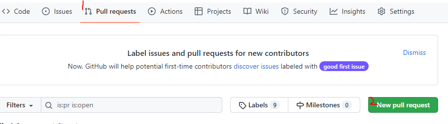
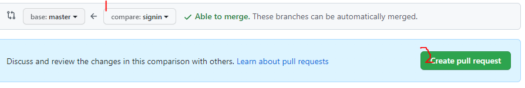

Git
GIt은 컴퓨터 파일의 변경사항을 추적하고 여러 사용자들 간에 해당 파일 작업을 조율하기 위한 대표적인 버전관리 시스템(VCS)입니다.
설치
Git 사이트 클릭후 다운로드
버전 확인
- cmd창 열기 (명령 프롬프트)
- cmd창에서
git --version엔터 - 버전이 정상적으로 출력이되면 설치 완료됨
GitHub
GitHub 접속후 가입하기
기본세팅
Git 설치후 터머널에서 한번만 세팅하면 됨
# 개행 문자 (NewLine) 설정
## MacOS
git config --global core.autocrlf input
## Windows
git config --global core.autocrlf true
# 사용자 정보 등록
## 커밋(버전 생성)을 위한 정보 등록
git config --global user.name 'jjgodcom'
git config --global user.email 'jjgodcom1@gamil.com'
#구성 확인
git config --global --list
GitHub에 프로젝트 업로드하기
- New버튼 클릭해서 새로운 프로젝트 만들기
- Repository name 에 프로젝트 이름 작성
- Create repository 클릭
- 다음화면 넘어가면 주소 반드시 복사하기
- 터미널에서
git remote add origin 주소입력 - 터미널에서
git push origin master입력 - 6번 입력후 잠시후에 깃허브에 로그인하라는 창에서 Sign in 머시기 클릭
- GitHub 접속해서 생성된 프로젝트에 파일이 업로드가 되어있는지 확인
버전 생성과 업로드 이해
# 현재 프로젝트에서 변경사항 추적(버전 관리)을 시작
git init
# 변경사항을 추적할 특정 파일(index.html)을 지정
git add index.html
# 모든 파일의 변경사항을 추적하도록 지정
git add .
# 메시지(-m '')와 함쎄 버전을 생성.
git commit -m '메시지'
# origin이란 별칭으로 원격 저장소를 연결
git remote add origin 복사한주소
# origin이란 별칭의 원격 저장소로 버전 내역 전송
git push origin master
Netify
Netify는 GitHub 프로젝트 연결하면 실시간 사이트로 배포합니다.
branch 생성
# branch 목록
git branch
# signin 이라는 branch 생성
git branch signin
# signin 이라는 branch 연결
git checkout signig
branch 병합(Pull Request)
git add .
git commit -m '수정된 내용'
git push origin signin
Pull requests 클릭 후 New pull reauest 클릭
수정한 브런치 선택후 Create pull request 클릭
창이 넘어가면 merge pull request 클릭
끝
Clone - 프로젝트 복제
# 경로 변경
cd 경로
# 경로 빠져 나가기
cd ..
# 프로젝트 복사
git clone 주소
Reset - 버전 되돌리기
# 가장 최신버전에서 한단계 뒤로 되돌리겟다,
git reset --hard HEAD~1
# 만약 잘못 되돌렸을경우 한번은 복구 가능
git reset --hard ORIG_HEAD
Markdown(.md)
GitHub용 파일명은 반드시 README.md 로 생성하기
README.md 작성방법은 이곳 참고
장단점
장점
- 문법이 쉽고 간결하다.
- 관리가 쉽다.
- 지원 가능한 플랫폼과 프로그램이 다양하다.
단점
- 표준이 없다.
- 모든 HTML 마크업을 대신하지 못한다.
제목(Header)
# 의 개수가 작아질수록 크기 작아짐
# 제목(Header)
# 제목 1
## 제목2
### 제목3
#### 제목4
##### 제목5
###### 제목6
문장(paragraph)
문장만 작성하면 됨
# 문장(paragraph)
안녕하세요
줄바꿈(Line Breaks)
(스페이스바 두번) or <br> 사용
# 줄바꿈(Line Breaks)
띄어쓰기 두번쓰면 줄바꿈
동해물과 백두산이 마르고 닳도록
하느님이 보우하시 우리나라 만세
강조(paragraph)
_ABC_: 이텔릭**ABC**: 두껍게**_ABC + ABC_**: 이텔릭 + 두껍게~~ABC~~: 취소선<u>ABC</u>: 밑줄
# 강조(Emphasis)
_이텔릭_
**두껍게**
**_이텔릭 + 두껍게_**
~~취소선~~
밑줄
목록(List)
1.: 순서가 필요한 목록-: 순서가 필요하지 않는 목록(tab2번): 들여쓰기
# 목록(List)
1. 순서가 필요한 목록
1. 순서가 필요한 목록
1. 들여쓰기(tab 2번)
1. 들여쓰기(tab 2번)
1. 순서가 필요한 목록
- 순서가 필요하지 않은 목록
- 순서가 필요하지 않은 목록
- 들여쓰기(tab 2번)
- 들여쓰기(tab 2번)
- 순서가 필요하지 않은 목록
링크(Links)
[출력할 텍스트](링크 "title속성")
# 링크(Links)
[GOOGLE](https://www.google.co.kr/)
[NAVER](https://www.naver.com/ "NAVER로 이동!")
<a href="jjgodcom.com" target="_blank">jjgodcom</a>
이미지(Images)
: 이미지](주소): 이미지 클릭시 경로 이동- 크기 조절을 원할경우 HTML 태그 width 직접 작성
# 이미지(Images)

이미지에 링크 연결
[](jjgodcom.com)
Netlify
[](jjgodcom.com)
인용문(BlockQuote)
>를 사용합니다.
# 인용문(BlockQuote)
> 남의 말이나 글에서 직접 또는 간접으로 따온 문장.
> (네이버 국어 사전)
> 인용문을 작성하세요
>> 중첩된 인용문1
>>> 중첩된 인용문2
>>>> 중첩된 인용문3
인라인(inLine) 코드 강조
` `를 사용합니다.
# 인라인(inLine) 코드 강조
`code`
블럭(Block) 코드 강조
```언어 작성할내용```를 사용합니다.
# 블럭(Block) 코드 강조
```html
jjgodcom
```
```css
a {
top:50px
}
```
```javascript
function demo(){
console.log
}
```
```bash
git commit -m '메시지'
```
```plaintext
단순
표(Table)
--|--|--: 표 생성--|:--:|--: 가운데 정렬--|--:|--: 오른쪽 정렬
# 표(Table)
표 생성 및 정렬
값 | 의미 | 기본값
--|:--:|--:
static | 기준 없음 | 0
relarive | 요소 자신 | X
수평선
---, ***, ___를 사용합니다.
# 수평선
---
***
___